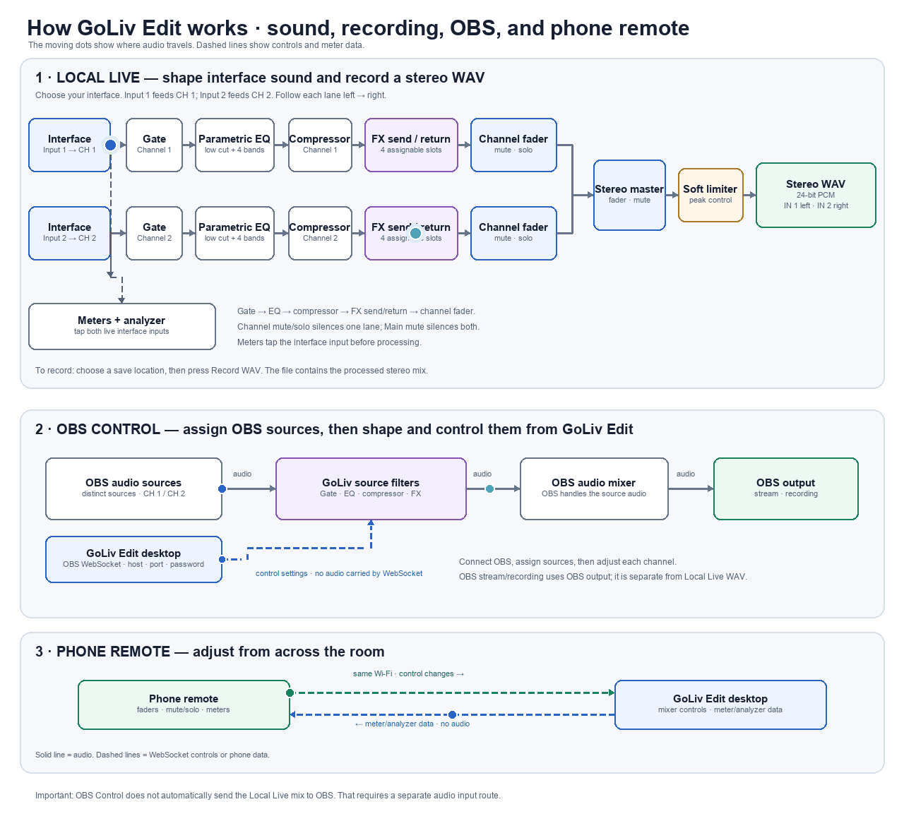

◉
Two channels, one stereo mix
Keep sources separate, balance the channel strips, and bring them together at the main output.
Shape two inputs with a gate, parametric EQ, compression, and expressive effects. Record a processed stereo mix, work alongside OBS, and make adjustments from your phone.
Follow the moving signal through GoLiv Edit: from interface inputs and channel processing to a stereo recording or OBS, while your phone sends control changes over Wi‑Fi.

A focused channel strip and stereo mixer give you practical tools without turning every session into a routing project.
Keep sources separate, balance the channel strips, and bring them together at the main output.
Shape each channel with a noise gate, four-band parametric EQ with low cut, and an adjustable compressor.
Blend reverb, stereo delay, and chorus through channel sends and dedicated effect returns.
Record the processed Local Live mix as a stereo WAV on your computer.
Connect to OBS WebSocket, map audio sources to channels, and manage supported mixer processing from GoLiv Edit.
Pair over the same Wi‑Fi network to adjust supported mixer controls from across the room.
Local Live and OBS Control are two distinct workflows. Pick the one that fits your session.
Connect an audio interface, choose it in the app, shape both channels, and record the processed stereo mix to WAV.
Connect to OBS WebSocket and assign each OBS audio source to a mixer channel. OBS carries the audio onward to its mixer and stream or recording output.
Choose the current release for your device. The release page includes the available macOS and Windows packages and their version notes.
macOS and Windows builds differ in feature coverage. See the release notes before choosing a package. GoLiv Edit does not automatically route a Local Live recording into OBS; that requires a separate audio route.